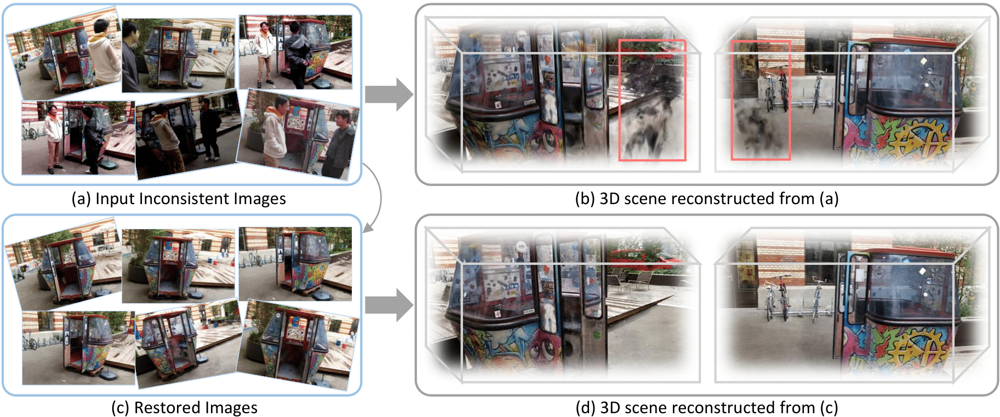

Abstract

This paper tackles the challenge of robust reconstruction, i.e., the task of reconstructing a 3D scene from a set of inconsistent multi-view images. Some recent works have attempted to simultaneously remove image inconsistencies and perform reconstruction by integrating image degradation modeling into neural 3D scene representations.However, these methods rely heavily on dense observations for robustly optimizing model parameters.To address this issue, we propose to decouple robust reconstruction into two subtasks: restoration and reconstruction, which naturally simplifies the optimization process.To this end, we introduce UniVerse, a unified framework for robust reconstruction based on a video diffusion model. Specifically, UniVerse first converts inconsistent images into initial videos, then uses a specially designed video diffusion model to restore them into consistent images, and finally reconstructs the 3D scenes from these restored images.Compared with case-by-case per-view degradation modeling, the diffusion model learns a general scene prior from large-scale data, making it applicable to diverse image inconsistencies.Extensive experiments on both synthetic and real-world datasets demonstrate the strong generalization capability and superior performance of our method in robust reconstruction. Moreover, UniVerse can control the style of the reconstructed 3D scene.
 UniVerse: Unleashing the Scene Prior of Video Diffusion Models for Robust Radiance Field Reconstruction
UniVerse: Unleashing the Scene Prior of Video Diffusion Models for Robust Radiance Field Reconstruction